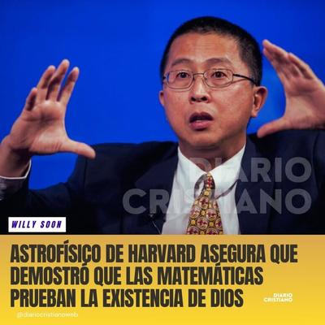

Bueno, a Albert Einstein se atribuye la siguiente frase: «Hay dos cosas infinitas: el Universo y la estup1dez humana. Y del Universo no estoy seguro.» Lo haya dicho Einstein o no, parece tener razón. En las redes sociales ha circulado recientemente una noticia tan pintoresca como falsa: según ciertos medios religiosos, un «astrofísico de Harvard» llamado Willie Soon, habría «demostrado matemáticamente la existencia de Dios», y «ya lo quieren nominar al Premio Nobel». El titular es tan eficaz para captar la atención de los crédulos, como para provocar una sonrisa irónica entre quienes conocen mínimamente cómo funciona la ciencia: ASTROFÍSICO DE HARVARD ASEGURA QUE DEMOSTRÓ QUE LAS MATEMÁTICAS PRUEBAN LA EXISTENCIA DE DIOS.


Pero, ¿quién es Willie Soon? ¿Realmente existe? —Willie Wei-Hock Soon es un ingeniero aeroespacial malayo (NO UN ASTROFÍSICO) nacido en 1966, con estudios en la University of Southern California, quien trabajó como investigador asociado en el Harvard-Smithsonian Center for Astrophysics, institución científica ubicada en Cambridge (EE. UU.), pero independiente de la Universidad de Harvard. Repetimos: No es, pues, un astrofísico de Harvard. Los ingenieros aeroespaciales diseñan y construyen tecnología (como aviones, satélites y naves espaciales), mientras que los astrofísicos estudian la composición y los procesos de los cuerpos celestes para entender el universo.
Sin embargo, Willie Soon es conocido por sus publicaciones sobre variabilidad solar y clima, así como también por las controversias que lo rodean: recibió financiamiento de la industria petrolera, y ha sido duramente criticado por promover tesis negacionistas del cambio climático. Obviamente, un ingeniero aeroespacial puede saber algo sobre variabilidad solar y clima debido a su formación en física, aerodinámica y ciencias de la Tierra, pero no es un conocimiento central de su especialidad.
Pero además, aunque sí existe el «doctor Soon», no existe ninguna demostración matemática de «Dios» atribuible a él, ni existe publicación científica, ni ponencia, ni preprint, ni entrevista verificable en la que Soon haya sostenido tal disparate. Y mucho menos hay registro alguno de que haya sido propuesto para el Premio Nobel. Todo eso pertenece al terreno del sensacionalismo religioso, no de la ciencia. Todo es producto de la «honestidad» con que los cristianos divulgan sus creencias.
Desde la perspectiva científica, hablar de «demostrar la existencia de Dios mediante las matemáticas», es un sinsentido absoluto. Las matemáticas son un lenguaje lógico y simbólico para describir relaciones cuantitativas entre fenómenos observables o formalmente definidos. «Dios» en cambio, es un concepto metafísico: no se mide, no se detecta, no se observa, ni se puede definir operacionalmente. Pretender probar su existencia con ecuaciones, es como intentar calcular el peso del alma o el volumen de la fe.
La ciencia puede deducir la existencia de cuerpos físicos invisibles, pero existentes en el mundo real y objetivo, como cuerpos exoplanetarios, o agujeros negros, porque sus efectos gravitacionales, radiativos o dinámicos se pueden medir. «Dios», en cambio, en la definición teísta, carece de toda manifestación física, no trasciende el mundo de los conceptos. Por tanto, ningún astrofísico serio puede proponer su «demostración matemática», sin abandonar el terreno de la ciencia y caer en la charlatanería.
La noticia fue difundida por páginas que viven de la viralidad, como «Diario Cristiano Web». Entrando aquí en juego el concepto de click-bait, término inglés que significa literalmente «anzuelo de clics»: titulares diseñados para atraer la curiosidad o la emoción del lector (a menudo mediante exageraciones o falsedades) con el fin de obtener visitas, likes o dinero por publicidad. (Así es la moralidad cristiana en el mundo real).
En este caso, el anzuelo fue bien elaborado:
«Astrofísico de Harvard» (suena prestigioso),
«demuestra matemáticamente» (suena científico),
«la existencia de Dios» (suena milagroso),
le darán un Nobel» (suena triunfal).
Sin embargo, detrás del llamativo titular, no hay sustancia alguna: ni pruebas, ni citas, ni artículos, ni declaraciones verificables. Es el patrón clásico de la desinformación religiosa en internet: se fabrica una historia edificante para reafirmar la fe de los creyentes, no para informar.
Pero lo más preocupante no es que existan páginas que inventen noticias falsas, sino que miles de personas las crean y las difundan sin cuestionar. Los medios religiosos suelen adoptar este tipo de «revelaciones científicas» con entusiasmo, porque aparentan dar respaldo racional a sus dogmas. Sin embargo, esa actitud sólo pone en evidencia el contraste entre la fe ciega y el pensamiento crítico. Por cierto: ¿Por qué será que la fe trata tanto de validarse mediante la ciencia, mientras que la ciencia se valida a sí misma prescindiendo totalmente de la fe?
A todo astrofísico debe resultarle francamente cómico imaginar que alguien crea poder «probar» la existencia de una divinidad universal con la misma metodología que usan para estudiar un cúmulo globular o una supernova. Porque la ciencia no trabaja con milagros ni con dogmas: trabaja con evidencias, reproducibilidad y revisión crítica. Hay científicos creyentes de diferentes religiones, es verdad, pero todos dejan colgada su fe en la puerta del laboratorio, porque adentro no la necesitan para nada.
Así que el supuesto «astrofísico de Harvard que probó la existencia de Dios» es simplemente una invención viral. Willie Soon, más allá de sus controversias reales, jamás ha demostrado nada semejante, ni ha sido reconocido por ello. La noticia es un ejemplo de cómo la ignorancia, la fe ingenua y el deseo de confirmación, se combinan para fabricar historias absurdas que, lamentablemente, viajan más rápido que la verdad.
En resumen, si alguien afirma haber probado a «Dios» con matemáticas, lo único que realmente ha demostrado… es que la fe (como la estup1dez humana) no tiene límites, pero la lógica sí.
[Godless Freeman]
[Crédito de imagen: Diario Cristiano Web]
Referencias: - ———————
Comentarios
Comments powered by Disqus